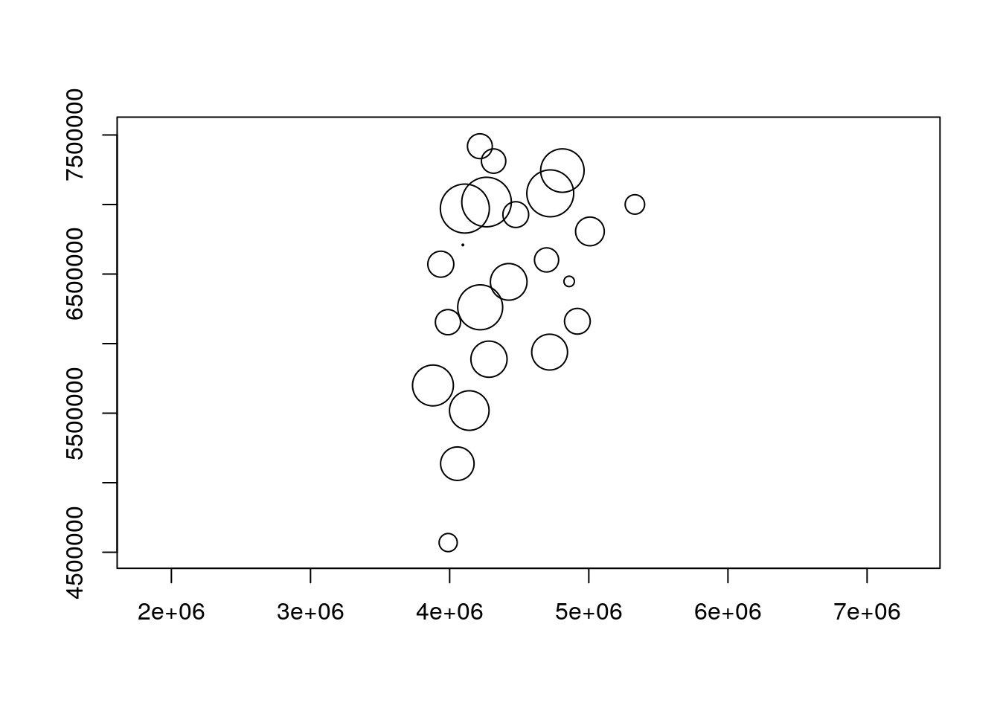

Chapter 3 Taller VECTORES: Aplicación de software de información geográfica y modelado (no terminado)
Nota: Existen diferentes recursos para aprender R, sf, stars y raster. Use Google, Baidu o duckduckgo
- www.github.com/r-spatial/sf
- www.github.com/r-spatial/stars
- www.github.com/rspatial/raster
- https://bookdown.org/
- https://geocompr.robinlovelace.net/
- https://www.datascienceatthecommandline.com/
- https://bookdown.org/rdpeng/rprogdatascience/
NOTA: SI ALGUNA VEZ TE PIERDES USANDO ALGUNA FUNCION DE R, ESCRIBE ?FUNCION
Por ejemplo, si tenemos dudas con la funcion aggregate, plot, read.csv
NOTA: PARA COMENTAR, ESCRIBA #
Por ejemplo,
3.1 Instalacion
Por favor instale las siguientes librerias en R, copie y peque (cole) en R:
install.packages(
c("sf", "stars", "cptcity", "ggplot2", "raster", "ncdf4",
"RNetCDF", "maps", "data.table", "readxl")
)Para correr el ejemplo de stars con Sentinel 5P instale la sigueinte libreria (1 Gb)
Para realmente comenzar es necesario mencionar que R es un lenguaje de programacion estadistico libre (gratis y abierto) orientado a objeto escrito en C, con bindings directos para C++, C y Fortran.
3.2 R desde Excel, libreoffice, archivos de texto, etc.
A veces debemos o obtenemos datos en hojas de calculo (Libreoffice Calc o Microsoft Office Excel). Cuando este archivo es pequeño no hay problema, pero la realidad es que cada vez es mas frecuente contar con grandes bases de datos y trabajar con un programa de interface grafica se hace dificil. Una de las razones es que la interfaz grafica consume muchos recursos computacionales, que podrian ser usados para el procesamiento de informacion. Por lo tanto
3.2.1 El Niño y la Niña
“El Niño (La Niña) is a phenomenon in the equatorial Pacific Ocean characterized by a five consecutive 3-month running mean of sea surface temperature (SST) anomalies in the Niño 3.4 region that is above (below) the threshold of +0.5°C (-0.5°C). This standard of measure is known as the Oceanic Niño Index (ONI).” NOAA
Vamos a leer la temperatura de la superficie del mar para calcular el indice ONI
do (5 min) - Abra https://www.ncdc.noaa.gov/teleconnections/nao/data.csv - Como son los datos? - Cual es la separacion de las columnas?
3.2.2 Usando base
url <- "http://www.cpc.ncep.noaa.gov/products/analysis_monitoring/ensostuff/detrend.nino34.ascii.txt"
# Leyendo datos
oni = read.table(url, h = T)
# construyendo la variable de fecha / data
oni$Date <- as.Date(paste0(oni$YR, ifelse(nchar(oni$MON) <
2, paste0(0, oni$MON), oni$MON), "01"), format = "%Y%m%d")
# Extrayendo el año
oni$Year <- as.integer(strftime(oni$Date, "%Y"))
# Extrayendo el mes
oni$Month <- as.integer(strftime(oni$Date, "%m"))
# Definiendo la funcion de media movil
ma <- function(x, n = 3) {
stats::filter(x, rep(1/n, n), sides = 2)
}
# Calculando la media movil
oni$ONI <- ma(oni$ANOM, 3)
# Seleccionando las columnas de interes
oni <- oni[, c("Date", "Year", "Month", "ONI")]
# mostrando las primeras 6 observaciones de cada columna
head(oni)## Date Year Month ONI
## 1 1950-01-01 1950 1 NA
## 2 1950-02-01 1950 2 -1.336667
## 3 1950-03-01 1950 3 -1.166667
## 4 1950-04-01 1950 4 -1.183333
## 5 1950-05-01 1950 5 -1.073333
## 6 1950-06-01 1950 6 -0.8500003.2.3 Usando data.table (mi favorito junto con sf)
data.table es mas rapido que python, julia y spark
https://h2oai.github.io/db-benchmark/
library(data.table)
# Leyendo datos
oni = fread(url, h = T)
# construyendo la variable de fecha / data
oni$Date <- as.Date(paste0(oni$YR, ifelse(nchar(oni$MON) <
2, paste0(0, oni$MON), oni$MON), "01"), format = "%Y%m%d")
# Extrayendo el año
oni$Year <- as.integer(strftime(oni$Date, "%Y"))
# Extrayendo el mes
oni$Month <- as.integer(strftime(oni$Date, "%m"))
# Definiendo la funcion de media movil
ma <- function(x, n = 3) {
stats::filter(x, rep(1/n, n), sides = 2)
}
# Calculando la media movil
oni$ONI <- ma(oni$ANOM, 3)
# Seleccionando las columnas de interes
oni <- oni[, c("Date", "Year", "Month", "ONI")]
# mostrando las primeras 6 observaciones de cada columna
oni
class(oni)Otras librerias para leer datos tabulares (planihas - spreadsheets):
3.2.4 summary
## Date Year Month ONI
## Min. :1950-01-01 Min. :1950 Min. : 1.000 Min. :-2.033333
## 1st Qu.:1967-05-24 1st Qu.:1967 1st Qu.: 3.000 1st Qu.:-0.536667
## Median :1984-10-16 Median :1984 Median : 6.000 Median :-0.003333
## Mean :1984-10-15 Mean :1984 Mean : 6.481 Mean : 0.032758
## 3rd Qu.:2002-03-08 3rd Qu.:2002 3rd Qu.: 9.000 3rd Qu.: 0.560833
## Max. :2019-08-01 Max. :2019 Max. :12.000 Max. : 2.643333
## NA's :23.2.5 Ploteando datos con base
library(ggplot2)
library(cptcity)
ggplot(oni,
aes(x = Date, y = ONI,colour = ONI)) +
geom_line(size = 2)+
scale_colour_gradientn(colours = rev(cpt(find_cpt("cb_div_RdB")[2])),
limit = c(-2.7, 2.7))## Don't know how to automatically pick scale for object of type ts. Defaulting to continuous.
3.3 Vectores
GDAL es la libreria de abstraccion de datos espaciales. Permite leer diferentes tipos de datos de tipo vectores y [raster](https://gdal.org/drivers/raster/index.html. Algunos formatos de vectores:
- ESRI Shapefile
- Google Earth Engine Data API
- GeoJSON para html
- GeoPackage que es el nuevo formato estandard para la representacion de datos espaciales. Ver aqui. Nuevo estandard ISO (puntos, areas, lineas, volume, etc) GeoPackage, creado por la Open Geospatial Consortium, es un formato abierto y no propietario de datos espaciales
sf significa Spatial Features y es una libreria con interface para las librerias GDAL, GEOS y PROJ que te premite trabajar con datos espaciales de una forma muy parecida que con una hoja de calculo normal. Como sf esta enlazada con GDAL, permite leer todos los formatos de vector de GDAL direcamente en R.
Vamos a leer datos de Argentina en formato GeoJSON
…
Es demasiado OBVIO que podemos leer datos shapefile .shp, por eso para cambiar un poco vamos a leer GeoJSON
datos bajados de IGN
## Linking to GEOS 3.7.1, GDAL 2.4.0, PROJ 5.2.0## Simple feature collection with 6 features and 8 fields
## geometry type: MULTIPOLYGON
## dimension: XYZ
## bbox: xmin: -71.96569 ymin: -41.10059 xmax: -58.33515 ymax: -29.50042
## epsg (SRID): 4326
## proj4string: +proj=longlat +datum=WGS84 +no_defs
## # A tibble: 6 x 9
## entidad objeto fna gna nam in1 fdc sag
## <int> <chr> <chr> <chr> <chr> <chr> <chr> <chr>
## 1 0 Provi… Ciud… Ciud… Ciud… 02 Geog… IGN
## 2 0 Provi… Prov… Prov… Neuq… 58 Geog… IGN
## 3 0 Provi… Prov… Prov… La P… 42 Geog… IGN
## 4 0 Provi… Prov… Prov… Mend… 50 Geog… IGN
## 5 0 Provi… Prov… Prov… San … 74 Geog… IGN
## 6 0 Provi… Prov… Prov… Córd… 14 Geog… IGN
## # … with 1 more variable: geometry <MULTIPOLYGON [°]>## [1] "entidad" "objeto" "fna" "gna" "nam" "in1"
## [7] "fdc" "sag" "geometry"Podemos seleccionar columnas y lineas igual a la forma que lo hicimos anteriormente, y ploteamos estos dados.
## Simple feature collection with 6 features and 8 fields
## geometry type: MULTIPOLYGON
## dimension: XYZ
## bbox: xmin: -71.96569 ymin: -41.10059 xmax: -58.33515 ymax: -29.50042
## epsg (SRID): 4326
## proj4string: +proj=longlat +datum=WGS84 +no_defs
## # A tibble: 6 x 9
## entidad objeto fna gna nam in1 fdc sag
## <int> <chr> <chr> <chr> <chr> <chr> <chr> <chr>
## 1 0 Provi… Ciud… Ciud… Ciud… 02 Geog… IGN
## 2 0 Provi… Prov… Prov… Neuq… 58 Geog… IGN
## 3 0 Provi… Prov… Prov… La P… 42 Geog… IGN
## 4 0 Provi… Prov… Prov… Mend… 50 Geog… IGN
## 5 0 Provi… Prov… Prov… San … 74 Geog… IGN
## 6 0 Provi… Prov… Prov… Córd… 14 Geog… IGN
## # … with 1 more variable: geometry <MULTIPOLYGON [°]>Vemos muchos datos, pero vamos a ver los datos unios por departamento. No estoy mostrando aqui pues son 435, pero ya se que vamos a seleccionar “Departamento Belgrano”
## [1] "Ciudad Autónoma de Buenos Aires"
## [2] "Provincia del Neuquén"
## [3] "Provincia de La Pampa"
## [4] "Provincia de Mendoza"
## [5] "Provincia de San Luis"
## [6] "Provincia de Córdoba"
## [7] "Provincia de Santa Fe"
## [8] "Provincia de Entre Ríos"
## [9] "Provincia de San Juan"
## [10] "Provincia de La Rioja"
## [11] "Provincia de Catamarca"
## [12] "Provincia de Tucumán"
## [13] "Provincia de Jujuy"
## [14] "Provincia del Chaco"
## [15] "Provincia de Formosa"
## [16] "Provincia de Santiago del Estero"
## [17] "Provincia de Tierra del Fuego, Antártida e Islas del Atlántico Sur"
## [18] "Provincia de Santa Cruz"
## [19] "Provincia del Chubut"
## [20] "Provincia de Río Negro"
## [21] "Provincia de Buenos Aires"
## [22] "Provincia de Corrientes"
## [23] "Provincia de Misiones"
## [24] "Provincia de Salta"La provincia 17 tiene un nombre muy largo, lo cambiamos asi:
De todas maneras, el campo fna tiene muchas veces la pabra “Provincia”, camos a eliminarla.
La siguiente linea de codigo es muy barbara / da hora / cool / la raja. Corran!
Ahora vamos a seleccionar Buenos Aires
Ahora, vamos a extraer los centroids de cada poligono
Recuerda, si tienes dudas de alguna funcion, clica ?FUNCION, por ejemplo, ?st_centroid
El warning se debe a que los datos que tenemos estan en latitud y longitud, y por lo visto, tenemos un dato con limites que no son correctos. Me parece que es la Antartida, debido se ve demasiado grande. Vamos a sacarla y ver como da
Ahora vemos que tenemos un warning diferente. En este caso, st_centroid nos avisa que los geograficos son constantes, pero como sabemos, la tierra es un elipsoide, no una esfera perfecta.
3.4 Geoprocesamiento
El geoprocesamiento incluye diferentes tareas como buffers y otros, como se ve en QGIS

Iremos a calcular el buffer de cada centroid, sin embargo, primeros vamos a proyectar nuestros datos para UTM con un usado codigo llamado EPSG (European Petroleum Survey Group), como muestra este blog cafe geodesico. Asi cada provincia podria tener un EPSG diferente, para simplificar este curso, utilizaremos el codigo epsg 5346.
Para transformar nuestros datos, tenemos que:
## Simple feature collection with 23 features and 8 fields
## geometry type: POINT
## dimension: XY
## bbox: xmin: 3879876 ymin: 4569475 xmax: 5331263 ymax: 7419288
## epsg (SRID): 5346
## proj4string: +proj=tmerc +lat_0=-90 +lon_0=-63 +k=1 +x_0=4500000 +y_0=0 +ellps=GRS80 +towgs84=0,0,0,0,0,0,0 +units=m +no_defs
## # A tibble: 23 x 9
## entidad objeto fna gna nam in1 fdc sag
## <int> <chr> <chr> <chr> <chr> <chr> <chr> <chr>
## 1 0 Provi… Ciud… Ciud… Ciud… 02 Geog… IGN
## 2 0 Provi… del … Prov… Neuq… 58 Geog… IGN
## 3 0 Provi… de L… Prov… La P… 42 Geog… IGN
## 4 0 Provi… de M… Prov… Mend… 50 Geog… IGN
## 5 0 Provi… de S… Prov… San … 74 Geog… IGN
## 6 0 Provi… de C… Prov… Córd… 14 Geog… IGN
## 7 0 Provi… de S… Prov… Sant… 82 Geog… IGN
## 8 0 Provi… de E… Prov… Entr… 30 Geog… IGN
## 9 0 Provi… de S… Prov… San … 70 Geog… IGN
## 10 0 Provi… de L… Prov… La R… 46 Geog… IGN
## # … with 13 more rows, and 1 more variable: geometry <POINT [m]>Luego, calculamos el buffer, que puede tener una distancia constante, o una distancia variable:
Macanudo /Bacan / barbaro / Chevere / Da Ora / Splendid / Cool!
Podemos calcular perfectamente un buffer con una distancia variable…..
dft_pro <- st_buffer(x = dft,
dist = rnorm(n = nrow(dft), mean = 100000, sd = 50000)) # 100 km
plot(dft_pro$geometry, axes = T)
Con este grafico hemos ploteado un buffer que tiene un comprimento alteatorio pero con una media de 100 km y un desvio padrao de 50 km, para marcar bien las posibilidades….
Antes de terminar, vamos plotear el area de cada buffer. Como el diametro fue calculado de forma aleatoria, en cada rodada este numero cambia, entonces:
Honestamente, puedes hacer muuuchas cosas.
lo que mas me ha asombrado / shocked / chocado / con sf, es que el processo de gridding de VEIN en qgis demoraba 10 minutos, pero usando sf rn R, demora 10 minutos Pero ahora vamos a leer datos meteorologicos y climaticos en grillas (RASTER) (next chpater)